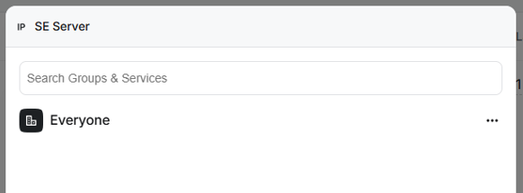
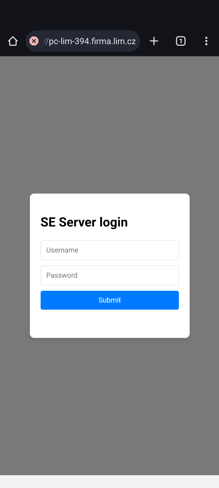
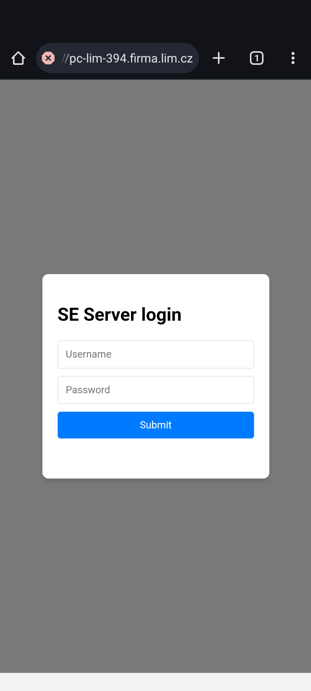

The Network Name can be changed later and represents the network with the seserver computer.
The Network URL is important as the account is identified by the URL.
Usually it is not possible (or desirable) to expose the server to the internet due to security reasons.
To overcome this limitation technologies like VPN emerged. They act as tunnel over HTTPS that connects a location outside of the local network and the local network. To the client it appears as if it were inside the local network.
Usually there is a program running on the local network and a program on the client PC outside of the local network that make the connection possible.
It is likely that your institution is already using some VPN. In that case it can be used to access the SE Server. Otherwise use Twingate as an example of a "VPN-like" solution. It is user friendly and we like the features. It is free for up-to 5 users.
The Twingate solution uses a Connector (a program) to provide access to the Resources (e.g. computers, subnets) on your private network.
The connector should be run on linux - either on physical or virtual machine:
Use SSH or PuTTY to log in to the linux machine.
Use "Hyper-V Quick Create" from the Start menu and select Ubuntu 22.04 LTS.
Check on either system that you can access the relevant resource (The PC running the SEServer).
Click Try Twingate for Free > at twingate.com and fill following three pages:
The Network Name can be changed later and represents the network with the seserver computer.
The Network URL is important as the account is identified by the URL.
Go to "Network", "Resources" and "Edit" inside the menu on three dots (...)
There you can:

Go to "Network", "Resources" and "Add Access" inside the menu on three dots (...)
The resource must be granted access rights. Set it to Everyone. Everyone means just you (see the team) right now.
You can restrict it later whe you will have more users or groups.
To check that the resource is accessible lets try to connect to the seserver using a phone.
After authenticating in the app, the resource is visible.
Open the browser and navigate to the alias.
 
